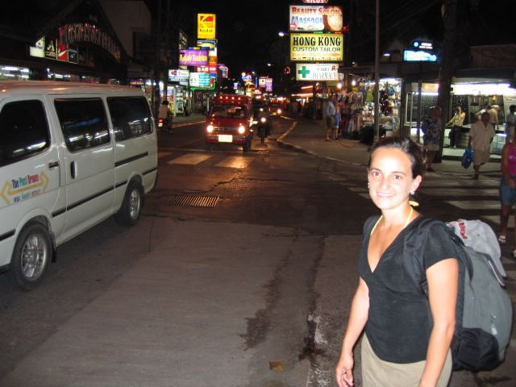

First |
Previous Picture |
Next Picture |
Last |
------------------------------ |
PICTURES HOME |
BORIS HOME

Patong is interesting but a bit of a mess. Huge, dirty hotels dotted with girly
bars and lots of prostitution. Don't take your kids there.
That was my original comment. Since then we have had the devastation of the tsunami in the area. The pictures from NYT and elsewhere show these exact streets completely covered with rubble and dead bodies. Needless to say we are very upset about the situation and hope fast relief is on the way for everyone affected.
picture_001.jpgtest